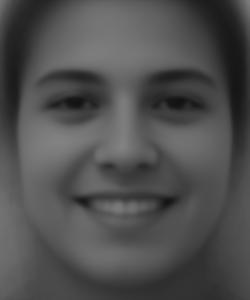
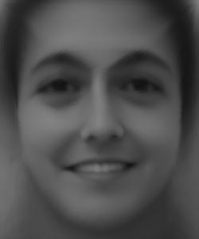
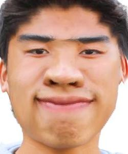

CS 280A Project 3
Face Morphing
Leo Huang
Overview
This project explores the use of morphs to create animations between various faces. A morph is a simultaenous warp of the image shape and a cross-dissolve of the image colors. We explore the implementation of this using Delaunay triangulation, affine transformation calcuation, and color cross-dissolving. In later parts, we compute the mean face of populations to extrapolate and create caricatures.
Defining Correspondences
To define correspondences between two images, the images were first cropped and rescaled such that the faces have relatively similar aspect ratios. I chose to use myself and the popular Spiderman villain, Willem Dafoe. After, using the given labeling tool, I generated 53 points of correspondence for each image, including the four corners of the image. Finally, I used scipy.spatial.Delaunay to generate a Delaunay triangulation using the average shape of the 2 sets of correspondences.

triangulation on Leo

raw image of Willem
Computing the "Mid-Way Face"
To find the mid-way face, I first compute the average shape between the two images using the following logic: avg_points = 0.5 * im1_points + 0.5 * im2_points. Then, I calculate the affine transformation matrix between the average shape triangle and each original shape's triangle, which is used during the inverse warping step. In the inverse warping step, a polygon mask is generated in the average shape frame, and then transformed using the matrix back into the original image frame. From there, the pixel color values can be sampled from the original image via interpolation back filled into the average shape image. Finally, the 2 generated warp images are cross-dissolved by averaging. I found that using scipy.interpolate.interpn gave a much faster runtime (~6x) compared to scipy.interpolate.griddata enabled by the use case being a dense polygon mask rather than scattered unstructured data.

wasian Willem
Willem
Generating a Morph Sequence
With the previous algorithm to compute the midway frames, we can make a morph sequence. I generated a sequence of 45 frames, displayed at 30 frames per second. Throughout the sequence, the shape warping and color cross-dissolving weights were slowly increased from 0 to 1 to slowly approach the destination image. I also illustrate how the triangles in each midway frame are back filled since I thought it was pretty cool.

resconstruction process
Calculating the "Mean Face" of a Population
FEI Database
The population I tested on was the FEI face database, which is a Brazilian face database containing images of 200 individuals taken at the Artificial Intelligence Laboratory of FEI in São Bernardo do Campo, São Paulo, Brazil. There are 100 male and female subjects each, ranging bewteen 19 and 40 years old.
Additionally, the dataset also provides a subset of manually aligned frontal images of each individual and its 46-point correspondences. There are 2 main subpopulations which we use to generate two mean faces: neutral faces and expression faces.

neutral image

expression image

expression triangulation
Calcuating Mean Face
As follows from before, the mean face shape was calculated by averaging the shape contribution from all 200 individuals in each neutral and expression populations. This was then used to warp all the faces using our morph function, however, this time with the cross-dissolve fraction set to 0 and shape-warp fraction to 1 instead. This is to preserve the original image pixel values, just simply transformed in an affine manner to match the average face shape. Finally, all 200 images in each population can be cross-dissolved to produce an overall average face image.

average neutral points

average expression face

average expression points
Warping onto the Mean Face
Here are some examples of the individuals warped onto the average neutral and average expression face respectively.
Here, I also warped my own face to the average expression face shape, and the average expression face my own face shape. This entailed first selecting the appropriate 46-point correspondence set, and then morphing as done before.

self face

self warped to average face

average face warped to self
Extrapolating Caricatures from the Mean
Finally, using the calculated mean face for the expression population, I also generated a few caricatures by choosing shape-warp fractions beyond the [0,1] interval. Extrapolating from the mean face, we can choose to exaggerate either my own face's features or the popluation's average face's features. We can observe that between the extra average face and the original self-to-average warp, the result is much wider and seems sort of flattened. On the other hand, the extra self face seems to emphasize the slanted eye and mouth shapes.
original face

extra average face a = 1.5

extra self face a = -0.5
Additional Work
Changing Gender
Another thing I explored was using our morph algorithm to change my gender using an average Taiwanese female face I found online.

triangulation on self
After producing the necessary correspondence points, I tested applying a shape-only warp, a color-only dissolve, and finally a combination between the two parameters to generate a few possibilities for my female self.

shape + color morph